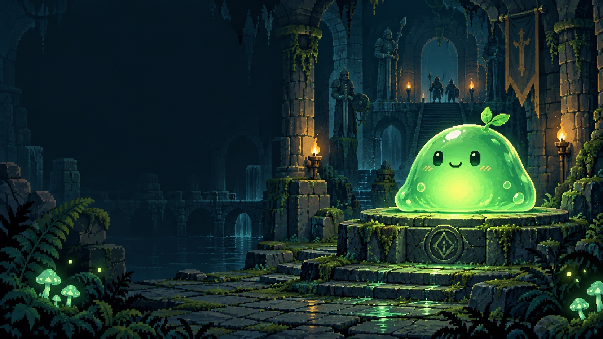
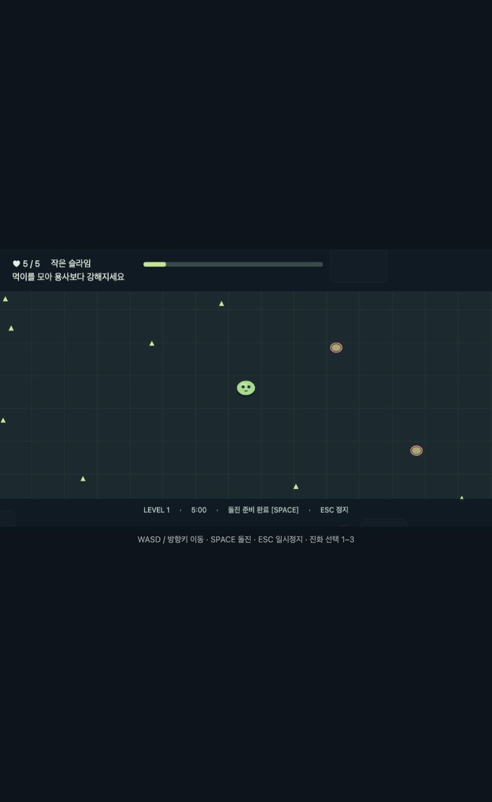
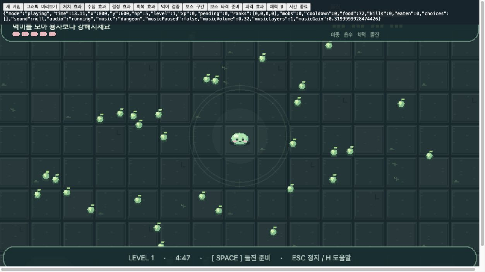
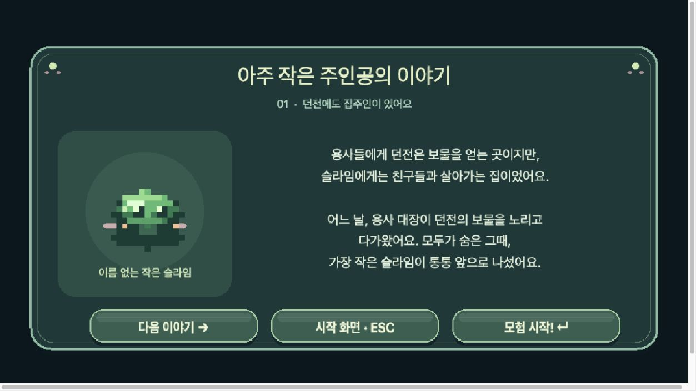
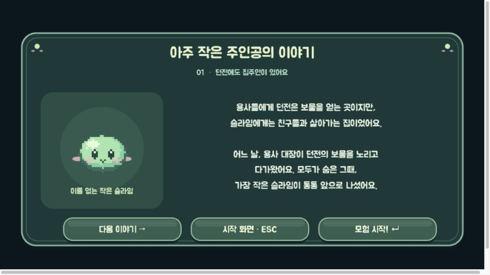
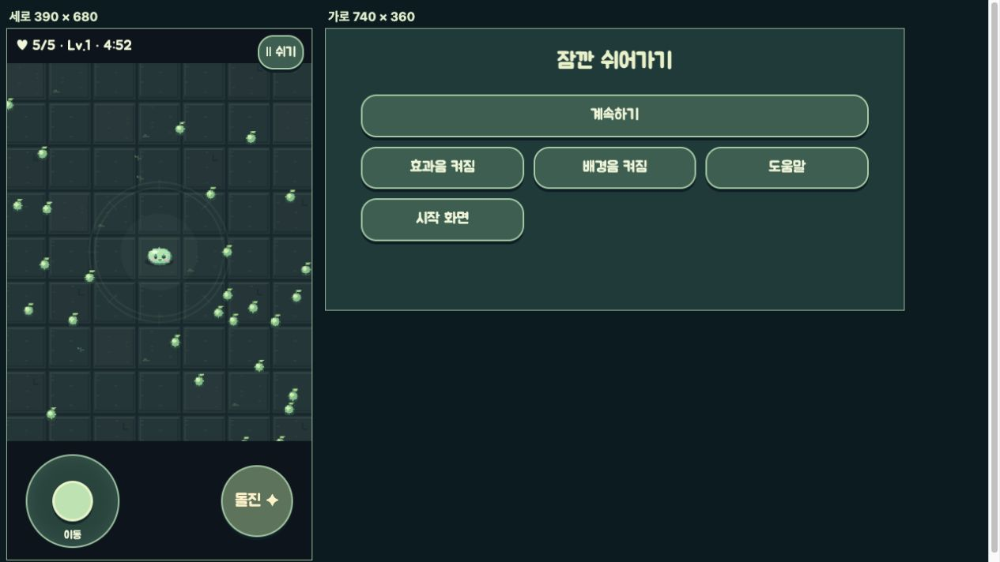

실제 브라우저 게임 제작 사례
AI와 함께
게임 만들기
작은 아이디어를 플레이 가능한
웹 게임으로 완성한 과정
기획 · 구현 · 디자인 · 검증 · 공개 배포
던전을 지키는 작은 슬라임

방향을 정하고, 만들고, 직접 확인하기
무엇이 필요한가
아이디어와 취향을 전달하고
재미·가독성·조작감을 판단합니다.
“먹이와 몬스터가 잘 구분되지 않아.”
어떻게 구현할까
기획안·코드·리소스를 만들고
실행 결과를 확인하며 수정합니다.
크기·색·이름표를 바꾸고 다시 플레이
용사에게는 보물 창고,
슬라임에게는 집
약한 몬스터가 성장해
자기 던전을 지킨다는 반전
이 설정에서 행동과 목표를 연결했습니다.
스토리의 이유가 플레이의 목표가 됩니다.
작은 몸
새싹
왕관
한 판이 끝나는 작은 게임부터
먼저 만든 기능
이동 · 자동 흡수 · 돌진
진화 선택 · 체력 · 보스 · 재도전
뒤로 미룬 기능
로그인 · 온라인 순위 · 멀티플레이
여러 맵 · 영구 성장
기능 수보다 “시작 → 플레이 → 승패 → 재도전”의 완결성을 우선했습니다.
기획에서 결정할 항목을 먼저 지정하기
게임의 한 줄 소개
플레이어가 반복해서 하게 될 행동
조작 방법과 게임 규칙
성공 및 실패 조건
화면 구성과 필요한 기능
이미지와 사운드 리소스 목록
위 내용으로 게임 아이디어를 정리해 줘
이 요청으로 정리한 것
- 어떤 행동을 반복하면 재미있는가
- 어떻게 이기고, 어떻게 실패하는가
- 어떤 화면과 리소스가 필요한가
아이디어를 구현 가능한 항목으로 나눴습니다.
출처: 이 게임을 만들며 주고받은 실제 사용자 요청 중 일부
설계 기준을 문서로 남겨 달라고 요청하기
웹 게임을 실제 구현하기 위한 설계를
지침으로 만들어 두고 싶어.
게임 시나리오
프로그램 전체 흐름 및 UI
게임 로직
레벨 및 난이도 디자인
그래픽 디자인
그리고 폴더 구조도 제안해 줘
설계와 함께 전달한 제약
“너무 덩치가 큰 것을 원하지 않아.”
가벼운 기술 구성과 작은 첫 버전의
범위를 선택하는 기준이 됐습니다.
기능뿐 아니라 복잡도와 관리 부담도
요청에 포함할 수 있습니다.
출처: 실제 사용자 요청 일부 발췌 · 추가 제약은 뒤이은 대화에서 제시
문서로 기준을 남기고, 구조는 가볍게
세 가지 문서
- 게임 설계 — 시나리오·조작·성장·승패
- 구현 지침 — 화면 흐름·코드 역할·배포
- 리소스 지침 — 그래픽·이미지·소리 규격
변경한 의도와 검수 기록도 문서에 보관했습니다.
설계 지침은 코드와 검수의 기준
승패가 겹치면?
“동시 발생 우선순위는 보스 처치 → 플레이어 사망 → 시간 초과로 고정합니다.”게임 설계 §6 · 성공과 실패
돌진 한 번의 피해는?
“한 번의 돌진으로 같은 적을 여러 번 타격할 수 없습니다.”게임 설계 §4 · 전투와 판정
진화 선택 중에는?
“진화·일시정지 중 적과 시간, 대기시간이 모두 멈춰야 합니다.”게임 설계 §7 · 확인 기준
개발은 어떤 순서로?
“각 단계는 직접 플레이해서 확인합니다. 초기 규칙부터 모든 기능을 한꺼번에 구현하지 않습니다.”구현 및 배포 지침 §5 · 개발 순서
출처: 프로젝트의 docs/game-design.md 및 docs/implementation.md에서 발췌
먼저 움직이고, 먹고, 끝나게 만들기

- 키보드 이동과 돌진
- 먹이 수집과 경험치
- 레벨업과 진화 선택
- HP·보스·승패·재도전
이 단계부터 브라우저에서 직접 확인했습니다.
“너무 어렵다”를 구체적인 조정으로
초기 첫 레벨업
약 52초 → 약 8~13초시작 주변 먹이 공급과 흡수 범위 조정
일반 적 상한
30명 → 18명과도한 누적을 줄이고 돌진 반격 기회 확보
263초 정상 속도 플레이에서 보스 처치·승리
300초 보스를 처치하지 않으면 시간 초과·실패
한 조작자의 소수 시도 기록입니다. 다양한 이용자의 추가 플레이 검증이 필요합니다.
귀여움과 구분하기 쉬움을 함께
플레이 정보
크기·모양·색·이름표로 먹이와 위험 구분
움직임의 느낌
통통 점프 · 눌림과 늘어남 · 작은 기울기
실제 게임 스프라이트를 표시했습니다. 애니메이션은 충돌 판정과 분리했습니다.
무슨 일이 일어났는지 바로 알게 하기
피격붉은 화면 가장자리 · −1 HP · 충격음
성장경험치 숫자 · 금색 파동 · 상승 멜로디
돌진·처치민트 잔상 · 별빛 · 말랑한 퇴장
배경 음악평소 던전 분위기 → 보스전의 긴장감

캐릭터는 픽셀, 한글은 매끄럽게


스타일을 맞추는 것과 읽기 쉽게 만드는 것을 함께 확인했습니다.
작은 화면에는 다른 UI가 필요했습니다

- 왼손 조이스틱 + 오른손 돌진
- 큰 HP·시간·쉬기 버튼
- 스크롤 가능한 도움말·스토리
- 화면 전환 시 입력 해제·일시정지
실제 휴대폰의 멀티터치·안전 영역은 추가 기기 검증이 필요합니다.
내 컴퓨터에서 되는 게임을 공유 가능한 링크로
npm test
npm run build규칙·음악·터치 테스트 8개
타입 검사와 배포 빌드
dist/브라우저가 실행하는
HTML·JS·이미지·글꼴
GitHub Pages실행 파일만 게시하고
공개 주소에서 다시 확인
별도 게임 서버·데이터베이스 없이 구성했습니다.
잘 만들어 보이는 결과도 다시 확인하기
이미지 속 한글
‘실행’, ‘검증’ 같은 글자도
의도와 다르게 생성될 수 있었습니다.
실제 조작
모바일 버튼 터치가 뒤쪽 캔버스에도
전달되는 문제를 찾아 수정했습니다.
눈으로 읽고, 직접 눌러 보고,
원하는 결과와 비교합니다.
요청에는 목표와 확인할 조건을 함께
- 범위를 정하기
“서버 없이 실행되는 작은 웹 게임으로, 첫 버전의 조작과 승패 조건을 정리해 줘.”
- 실행하며 확인하기
“브라우저에서 직접 플레이하고, 성장 속도·적 수·보스 난이도를 확인해 줘.”
- 수정 범위를 명확히 하기
“캐릭터는 픽셀 느낌을 유지하고, 도움말과 버튼의 한글만 매끄럽게 바꿔 줘.”
실제 대화의 요청을 발표용으로 정리한 예시입니다.